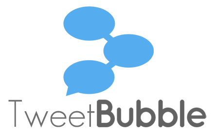

research
≡
The Interface Ecology Lab fosters integrative research projects spanning hardware, software, and theory, producing natural user interfaces, creativity support environments, games,
interaction techniques, visualization algorithms, semantics, programming languages, interactive installations, and evaluation methodologies.
research areas
 Body-based interfaces
integrate multi-modal sensing with interaction design and gesture recognition.
We investigate body-based interfaces for human expression in computing, addressing ideation and play.
Body-based interfaces
integrate multi-modal sensing with interaction design and gesture recognition.
We investigate body-based interfaces for human expression in computing, addressing ideation and play.
 Games and Play are fun and creative forms of human experience.
We study emerging culture and media surrounding game play.
We investigate game design through play, culture, interface, and media perspectives.
Games and Play are fun and creative forms of human experience.
We study emerging culture and media surrounding game play.
We investigate game design through play, culture, interface, and media perspectives.
 Information-Based Ideation (IBI) is a a theory and methodology for investigating tasks and activities in which people develop new ideas, while digital content serves as support and stimulus.
Information-Based Ideation (IBI) is a a theory and methodology for investigating tasks and activities in which people develop new ideas, while digital content serves as support and stimulus.People engaged in information-based ideation tasks curate— they collect, assemble, annotate, and exhibit.
 Free-form web curation is a spontaneous, improvisational,
and divergent creative process that involves choosing elements, sketching, and writing, and assembling them spatially.
Free-form web curation is non-linear and unrestricted, breaking out of lists and grids to support the synthesis and emergence of diverse ideas.
Free-form web curation is a spontaneous, improvisational,
and divergent creative process that involves choosing elements, sketching, and writing, and assembling them spatially.
Free-form web curation is non-linear and unrestricted, breaking out of lists and grids to support the synthesis and emergence of diverse ideas.
Web
semantics describe and derive significant attributes and relationships of digital content.
We design an innovative type system for deriving and presenting web semantics for diverse content —e.g., digital libraries, e-commerce, social media— to provide context to users engaged in
information-based ideation and curation.
Live media places bring together various media forms to support participatory shared
experiences in online communities. We designing tools to help people create more expressive and engaging live experiences in contexts such
as online learning and games.
current projects
LiveMâché is our current
design curation probe.
This art-inspired web app provides live, collaborative capabilities for collecting and organizing content, along with writing, sketching, chat, and live streaming video.
prior projects
 The Art.CHI installation provides a movement-based, spatial and visual interface for navigating a multi-scale information composition, which holistically represents an online art gallery.
The Art.CHI installation provides a movement-based, spatial and visual interface for navigating a multi-scale information composition, which holistically represents an online art gallery.
 IdeaMâché
is our previous web app that uses
free-form web curation as a medium of expression.
Curation is the process of creating and assembling information in meaningful exhibits, for people to think about.
IdeaMâché
is our previous web app that uses
free-form web curation as a medium of expression.
Curation is the process of creating and assembling information in meaningful exhibits, for people to think about.

TweetBubble
is a
Chrome extension
that helps Twitter users
engage in exploratory browsing, by following associational chains of
tweets through #hashtags and @users.
Our study show this increases the variety
of content people explore,which helps you develop multiple perspectives on a topic.
TweetBubble makes browsing a more fun and fluid experience.
 BigSemantics is an open
source software architecture and language for developing applications that present
interactive web semantics. Developers author wrappers to create semantic types, while inheriting from existing types.
The wrapper repository provides types for common web resources.
BigSemantics includes the Metadata In-Context Expander (MICE), an example HTML5 component for exploring linked web semantics in one context.
BigSemantics is an open
source software architecture and language for developing applications that present
interactive web semantics. Developers author wrappers to create semantic types, while inheriting from existing types.
The wrapper repository provides types for common web resources.
BigSemantics includes the Metadata In-Context Expander (MICE), an example HTML5 component for exploring linked web semantics in one context.
ZeroTouch is a high performance multi-point sensor that detects visual hulls, within a plane. Applications include free-air interaction, person tracking in rooms, automobile windshields, hover sensing (e.g., over capacitive multi-touch), and multi-touch.
 We designed digital games for Teaching Team Coordination (TeC).
Through ethnography, we developed new understanding of and design principles for fire emergency response work practice.
We invented Zero-Fidelity Simulation,
a method that reproduces communication and information distribution from target environments,
to produce engaging, cost-effective education.
Our simulations map real-world actions to game mechanics: players work together to achieve goals and avoid hazards.
We designed digital games for Teaching Team Coordination (TeC).
Through ethnography, we developed new understanding of and design principles for fire emergency response work practice.
We invented Zero-Fidelity Simulation,
a method that reproduces communication and information distribution from target environments,
to produce engaging, cost-effective education.
Our simulations map real-world actions to game mechanics: players work together to achieve goals and avoid hazards.
S.IM.PL is
our open source initiative to augment popular programming languages for
inter-operation.
S.IM.PL Serialization, the foundation, provides a cross-language type system.
This enables cross-language code generation, as well as
de/serialization to XML and JSON.
Object-Oriented Distributed Semantic
Services (OODSS) simplifies building distributed applications and services,
Message passing is encoded using S.IM.PL types, connecting
iPhone, Android, Java, and .Net clients to Java and .Net servers.
BigSemantics uses S.IM.PL.
 Hurricane Recovery: Collecting Locative Media to Rebuild Local Knowledge
We engaged in iterative, participatory design, reaching out to evacuee communities subsequent to Hurricane Katrina.
We gathering information about needs and desires, building situated semantics and a locative media collection sensemaking system.
Digital photographs were connected with GPS sensor data, semantics, a zoomable map interface, and an image clustering algorithm.
Hurricane Recovery: Collecting Locative Media to Rebuild Local Knowledge
We engaged in iterative, participatory design, reaching out to evacuee communities subsequent to Hurricane Katrina.
We gathering information about needs and desires, building situated semantics and a locative media collection sensemaking system.
Digital photographs were connected with GPS sensor data, semantics, a zoomable map interface, and an image clustering algorithm.
 Test Collection
aggregated a set of documents, a clearly formed problem that an algorithm is supposed to provide solutions to, and the answers that the algorithm should produce when executed on the documents.
The Test Collection Digital Library System enables collecting and labeling documents, and publishing.
Test Collection
aggregated a set of documents, a clearly formed problem that an algorithm is supposed to provide solutions to, and the answers that the algorithm should produce when executed on the documents.
The Test Collection Digital Library System enables collecting and labeling documents, and publishing.